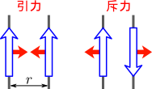
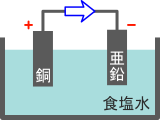
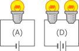
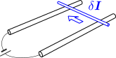
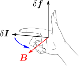
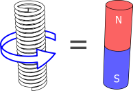

2. 電流に働く力
電流同士の間には、アンペール力(
6)が働く。定常電流は、ビオ・サバールの法則(
7)に従う磁場
B(x)
を作る。
電流間には力が働く：アンペール力

電流が流れている導線を2本用意し、互いに近づけていくと、右図のような力が働くことが知られている。これをアンペール力という（青矢印が電流、赤矢印がアンペール力）。
アンペール力の説明を行うには、まず電流などの定量化が必要である。その後、直線あるいは曲線形状の電流でのアンペール力を与え、一般の電流密度を持った場合へと進めることにする。これらを以下の3つの節に分けて議論する：
1.1:電流・電圧・抵抗の定量化1.2:電流要素から受けるアンペール力1.3:電流全体から受けるアンペール力
2.1
電流・電圧・抵抗の定量化
この節では、電気回路を用いて電流などの概念を導入する。電磁力学編の主要なテーマではないので、簡略化して軽く触れるだけにする。
電池

電流を発生させるための典型的な装置は、電池である。単純な電池としては、右図のように、電解液（飽和食塩水など）に銅と亜鉛を浸けて導線を繋いだものがある。このような電池をボルタ電池といい、市販されている電池はこれを改良したものである。銅の側を正極、亜鉛の側を負極と言い、それぞれ「＋」と「－」で表す（同図赤色部分）。電流の流れる向きは、正極⇒負極と定義する（同図青色矢印）。正極と負極を合わせて電極という。
なお、ボルタ電池に電流が流れていることは、正極に泡（水素）が発生したり、負極の亜鉛が溶けていくことから分かる。これを使えば、電流の定量化が可能である。例えば、1秒間あたり溶けた亜鉛の質量に比例するようにするといった具合である。硝酸銀水溶液に電流を流すと電極には銀が析出するのだが、昔はこれを用いて、単位時間当たりの銀の析出量に比例するように電流が定義されていた。
電流・電圧・抵抗
右図のように、電池電源（電池）に豆電球を繋いだ回路を考える。基準となる回路(A)に対し、同じ電源を2つ直列につないだもの(B)はより明るくなり、豆電球を2個直列につないだもの(C)はより暗くなる。
これを見ながら、電流・電圧・抵抗を以下のように直観的に導入する：
-
電流：導線を切断すると電球は光らなくなるので、導線中を何かが流れていると思われる。この流れを電流といい、電球が明るいほど大きな電流が流れているとみなす。図の例でいえば、最も暗いのが(C)で、明るいのが(B)なので、電流の大きさは(C)<(A)<(B)の順になる。
-
電圧：電源は、電流を流すための装置なので、「圧力」のようなものを生み出していると考えられる。「圧力」が大きいほど電流が流れやすいわけである。その「圧力」のことを電圧という。例えば上図の(B)では、電池を2つ直列につなぐことで(A)よりも電圧が大きくなり、より大きな電流が生じる（＝豆電球は明るくなる）。
-
抵抗：電球のフィラメントなどが持つ、電流の流れを妨げる作用のことを、抵抗（または電気抵抗）という。大きいほど電流が流れにくくなる。例えば上図の(C)では、抵抗器（ここでは豆電球）を直列につなぐと電気抵抗が大きくなり、電流が小さくなる（＝豆電球は暗くなる）。
オームの法則(1)による定量化

次に、上述の電流・電圧・抵抗の定量化を考える。右図の(D)は、電池・豆電球を2つ並列に繋いだものである。(A)は上図のものと同じである。この時、(A)と(D)の豆電球の明るさは同じになる。これは次のように解釈するのが自然だろう：(D)では、電圧
V
が2倍になって電流
I
を大きくしようとするが、抵抗
R
も2倍になって電流を妨げるため、結局これらの効果が打ち消し合って、電流
I
は(A)と同じになる（＝明るさも同じになる）。
電圧
V
と抵抗
R
がともに2倍になった時に電流
I
が変化しないということは、
I
が
V/R
に比例するということを示唆している。よって
I=VR(1)
という関係式が成り立つように定量化できそうである。そして実際、それが可能であることが実験的に知られている。これをオームの法則という。
なお、式(1)は比例関係を表すので、比例係数を付けてもよいが、比例係数が1となるように単位をとれば消すことができるので省略しても問題ない。これは、運動方程式
m¨x=f
に比例係数がないのと同じである。
このように、電圧と抵抗の値は、直列につないだときに加法性を持つように定量化すればよい。このように定量化した電圧の単位をボルトと言い
V
で表し、抵抗の単位はオームと言い
Ω
で表す。ただし、定量化を完了するには、基準となる
1V
や
1Ω
を決める必要である。詳しくは述べないが、例えば、電圧については前述のボルタ電池が
0.8V
程度、抵抗については銅線（断面積が
1mm2
、長さ
1m
、
20∘C
）の場合
0.017Ω
程度になる様に決められている。
電流の値
I
については、オームの法則(
1)により、
I=V/R
と定義すればよい。電流の単位はアンペアと言い
A
で表す。例えば、電池に豆電球をつないだ時の電流は、典型的な電池の電圧
1.5V
と、典型的な豆電球の抵抗
5Ω
を用いて、
0.3A
程度になる。
なお、電流の定量化は、オームの法則とは独立に行うことも可能である。例えば、上述のように硝酸銀水溶液を用いて銀の析出量に比例するように定義する方法である。あるいは、次節のアンペール力に比例するように決めてもよい。どの定義も互いに等価である。現在では、アンペール力を用いた定義が採用されている。
2.2
電流要素から受けるアンペール力
電流が流れている導線同士の間には、電流に比例する力（アンペール力）が働くことが知られている。
この節では、電流要素間に働くアンペール力が式(
6)で表されることを見る。
平行電流に働くアンペール力：式(2)
電流間に働く力を考えるために、まず最も単純な場合、即ち、2本の導線が平行な直線である場合を扱う。アンペール力の向きは右図のように、電流の方向が揃っている場合には引力、逆向きの場合には斥力になる。この力は、普通の乾電池を用いて確認できる程度の大きさになるので、実験も容易である。
アンペール力の大きさについては、両方の導線で等しくなる
（これは作用反作用の法則が成り立っているということであり、自然である）。アンペール力の大きさ
f
は、長さ
δl
あたり、以下のようになることが知られている：
f=2kmδlI1I2rkm≡10−7N⋅A−2(2)
ただし、
r
は2本の平行電流の間の距離、
I1
と
I2
はそれぞれの電流の大きさである。アンペール力
f
は、導線間の距離に反比例するわけである。また、各々の電流にも比例しているが、これは、アンペール力にもクーロン力と同様に重ね合わせの原理が成り立つことを示唆している。
係数から2を括り出しているのは、後述の電流要素間に働くアンペール力(6)の係数をきれいにするためである。
式(
2)が、導線の長さ
δl
当たりのアンペール力となっているのは、導線全体に働くアンペール力は、導線の長さに依存するからである。例えば、無限に長い導線であれば、全体に働くアンペール力は無限大になる
（無限に長い導線の質量は無限大なのだから、導線全体が有限の加速度を持つがためには、これは自然なことである）。導線の
δl
部分のことを、電流要素という。式(
2)は、任意の
δl
で厳密に成り立つが、平行な直線電流以外の場合はそうではなくなり、回路全体に働くアンペール力を計算するには、回路を微小な電流要素に分割し、それらに働くアンペール力を足し合わせるという区分求積法が用いられることになる。電流要素とは仮想的に分割したものであり、1つの電流要素だけを取り出すことはできない
（電流が流れる回路の一部のみを取り出すことはできない）。
なお、式(2)の比例係数
2km
はきりの良い値になっているが、実際、これは厳密な値である。というのも、電流の単位の定義が、この式(2)を用いてなされているからである。即ち、
1A
とは「同じ大きさの電流が流れる2本の直線電流を
1m
離して置いた時、導線
1m
当たりのアンペール力が
2×10−7N
となる」時の電流の大きさと定義されるのである。2本の導線
A,B
の電流が等しいかどうかは、第3の導線
C
を用意すれば判断できる。即ち、導線
C
をそれぞれの導線
A,B
に同じ距離まで近づけた時、アンペール力がどちらの導線でも同じになっていれば、導線
A,B
の電流は等しいとみなせる。
一般の形状の場合、電流要素間のアンペール力(3)が分かればよい
ここからは、導線が直線でなく一般的な形状の場合を考える。電流の向きを考える必要があるのでベクトル表記する：
I
。
I
は大きさが電流の大きさで、向きが電流の向きになるものであり、導線上の各点ごとに異なった値を取る。電流要素を、その長さ
δl
と電流
I
の積で表すことにする：
δI=δlI
（曲線を考えているので
δl
は十分短くとる）。電流要素
δI
に働くアンペール力
δf
が分かれば、導線全体に働くアンペール力は、
δf
の和として区分求積的に計算することができる。
即ち、試験電流要素
δI
が、別の導線
C
から受けるアンペール力
δf
は、
C
を無数のソース電流要素
δI1,δI2,…
に分割し、それらが
δI
に与えるアンペール力の総和を取ればよい：（
limδ→0
は分割を小さくする極限を表す）
δf=limδ→0∑iδfiδfi≡δIが、δIiから受けるアンペール力(3)

後は、2つの電流要素間に働くアンペール力が分かればよい。
δI
に働く力を実験的に測定するには、原理的には右図のように、太い導線の上に、自由にスライドする軽い導線（青色部分、これが電流要素になる）を乗せたような装置を用いて、電流要素がどのような力を受けるかを測定すればよい。ただし、図の電気回路自身（太い導線部分）からのアンペール力もあるので、この回路に流す電流はなるべく小さくしておく。
電流要素間のアンペール力：式(6)
電流要素間に働くアンペール力をけってしたい。電流要素の距離依存性について考えるために、第1章のクーロン力の場合を参考にする。クーロン力は逆2乗則に従っていたわけだが、直線電荷
（第1章の【1.4-注1】）の場合には、逆1乗となっていた。一方、平行電流の場合のアンペール力(
2)も同じく逆1乗である。従って、電流要素同士に働くアンペール力は距離の逆2乗則に従うであろうと考えられる：
|δf|∝1|x−x′|2(4)
x−x′
はソース電流要素から試験電流要素に向かうベクトル。
次に、電流要素の方向依存性について考える。試験電流要素
δI
がソース電流要素
δI′
から受けるアンペール力
δf
は、以下を満たすことが、実験的に知られている：
δfは、δIと直行する。δI′とx−x′で張られる面S内にある。
ただし、
δI′∥x−x′
となって
S
が決まらない場合や、
δI
が
S
と直行する場合は、
δf
の向きが決まらないが、
δf=0
となる。これを満たすようなベクトルは
δI×δI′׈x−x′|x−x′|2(5)
を実数倍したものしかない
（記号「
×
」は、力学編第10章で述べたクロス積）。これを見るには、
a×(b×c)
が、
a
と
b×c
の両方と直行すること、および、
b×c
が、
b
と
c
で張られる面に垂直であることを思い出せばよい。なお、
赤字部分の関数形は、式(
4)を反映したものである。
平行電流の場合のアンペール力(
2)からも分かるように、アンペール力は電流と電流要素の長さに比例するので、
δI,δI′
の1次式となるはずであるが、式(
5)はその形になっている。従って、
δf
は式(
5)の定数倍になる。
以上をまとめると、電流要素同士の間に働くアンペール力は
δf(x)=a⋅δI×δI′׈x−x′|x−x′|2
となる。比例係数
a
を決めるには、平行電流の場合の式(
2)と一致することを要請すればよい。そうすると最終的に、電流要素間に働くアンペール力は以下の【2.2-注1】のようになる。
【2.2-注1】電流要素に対するアンペール力
位置
x
に置かれた試験電流要素
δI
が、別の場所
x′
に置かれたソース電流要素
δI′
から受けるアンペール力
δf
は、以下のようになる：
δf(x)=kmδI×δI′׈x−x′|x−x′|2km≡10−7N⋅A−2(6)
補足
係数
km
は、直線電流の場合の式(
2)のものと同じである。上述の通り。式(
2)で係数2を括りだしたのは、式(
6)をきれいにするためである。
2.3
電流全体から受けるアンペール力：ビオ・サバールの法則
これまでは、電流を曲線で表していた。しかし実際には、1次元的な導線だけではなく電流が2次元的・3次元的に分布している場合もある。従って、第1章で電荷密度を定義したように、電流についても、電流密度を定義することができるはずである。
この節では、第1章でクーロン力から電場を定義したように、アンペール力から磁場を定義し、電流密度分布から磁場を導くビオ・サバールの法則(
7)について述べる。
磁場

式(
6)を見れば分かるように、電流要素
δI
が受けるアンペール力は、
δI
の1次関数になっている。そこで、式(
6)において、電流要素
δI
と、それ以外の外部に依存する部分
B
に分けることができる：
δf(x)=δI×B(x)B(x)≡kmδI′׈x−x′|x−x′|2
この
B(x)
を磁場といい、右図のような関係になる。複数の電流要素からの作用を考えている場合、
B(x)
は、各々の電流要素が作る磁場の単純な和になる。
なぜ
B(x)
を磁場と呼ぶかについて述べておく必要があるだろう。ここまで、電流同士の間に力が働くと説明してきたが、それ以外にも、電流と磁石の間にも力が働くことが知られている。そして、磁石同士の間に働く力（＝磁力）は、アンペール力と同じ性質を持つのである（【2.3-注1】）。そのため、電流間のアンペール力の場合にも、磁場という言葉を使うのである。
【2.3-注1】磁石も磁場を作る
電流は、磁石とも相互作用することが知られている。例えば、方位磁石を電流の近くに寄せると、その向きが狂う。磁石を用いたこの相互作用は、通常、電流間に働くアンペール力よりも桁違いに大きなものになり、容易に観測できる。実際、歴史的には、最初に電流によって方位磁石が狂うことが発見され（エルステッドの実験）、それを受けた後の研究により、電流間に力が働くことが発見されている。

さらに、右図のように、ソレノイド（＝円筒状のコイル）に電流を流したものは、棒磁石と同じような相互作用をすることが知られている（電磁石）。即ち、電流の周りの場と磁石の周りの場は、同じものであるとみなせるのである。これが、磁場という名前の由来である。磁石には常にN極とS極が現れ、磁石を分割しても、N極だけあるいはS極だけを取り出すことはできないが、ソレノイドとの等価性を考えるともっともらしい。
電流密度とビオ・サバールの法則：式(7)
これまでは導線を1次元的な曲線と考えてきたが、太い導線や平面的な導体の場合はそのような近似ができない。そのような場合にも対応するためには、電流密度
j(x)
を考えるのがよいだろう。これは、電流の方向を向き、それに直交する単位面積あたりの通過電流である。従って、導線の場合、導線の断面全体にわたって電流密度を積分すると、導線の電流になるような量である。
j(x)
の単位は
A⋅m−2
となる。
電流密度
j(x)
が与えられた時、磁場
B(x)
は、以下のビオ・サバールの法則【2.3-注1】で与えられる。このようになることは、式(
6)から類推される。
【2.3-注1】ビオ・サバールの法則
電流密度
j
が、点
x
に作る磁場
B(x)
は以下のようになる：
B(x)=km∫x′j(x′)׈x−x′|x−x′|2km≡10−7N⋅A−2(7)
これを、ビオ・サバールの法則という。
補足
式(
7)は、被積分が発散する点を持つが、クーロンの法則の場合と同様に、広義積分と考えれば問題ない。